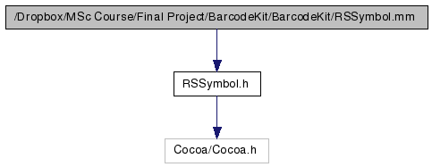

Main Page
Classes
Files
File List
File Members
/Dropbox/MSc Course/Final Project/BarcodeKit/BarcodeKit/RSSymbol.mm File Reference
#import "
RSSymbol.h
"
Include dependency graph for RSSymbol.mm:

Go to the source code of this file.
Generated on Thu May 10 21:51:40 2012 for BarcodeKit by
1.5.7